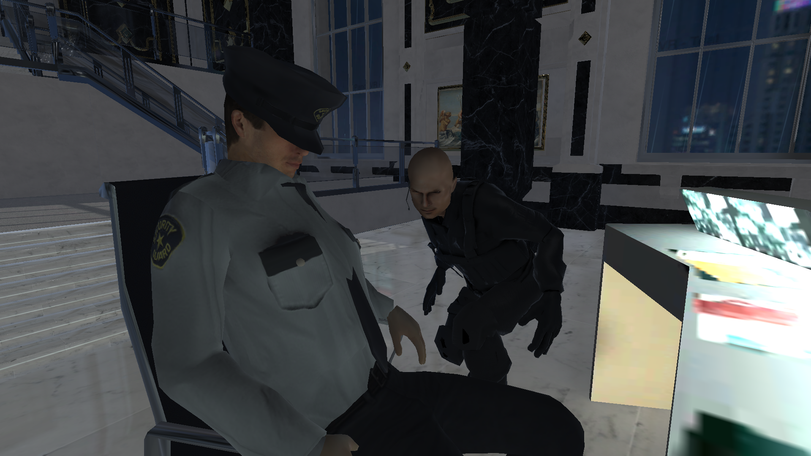
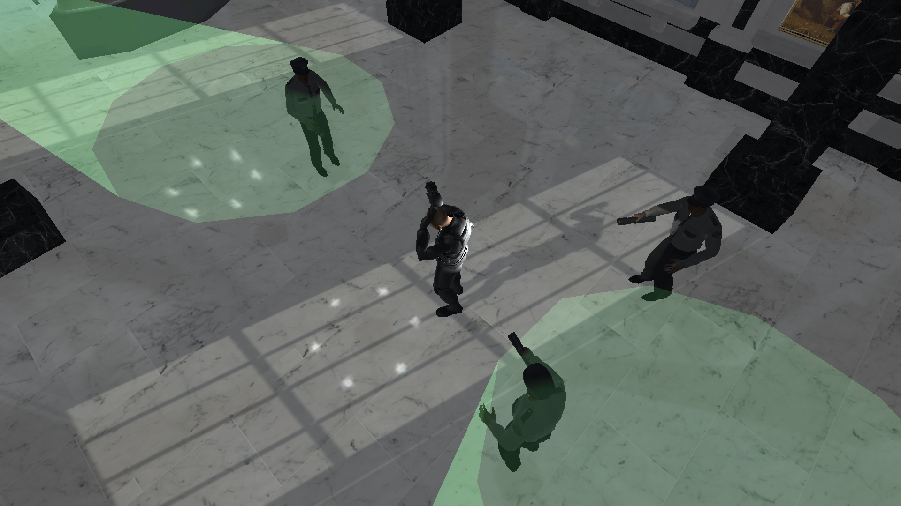
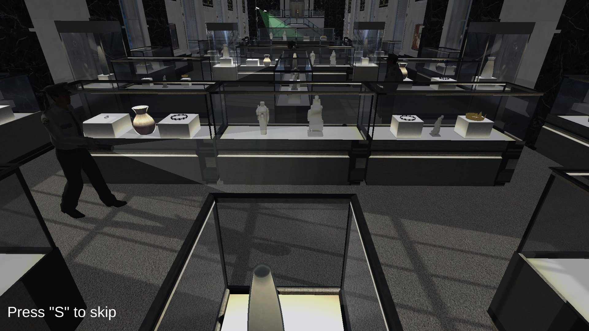

Games
The Great Fleece


What I learned
- Created and lit 3D environments using lightmapping, reflections, emission materials and light probes.
- Created cinematic cutscenes using Timeline and Cinemachine.
- Developed 3D movement and interaction systems while using NavMesh navigation and texture baking.
- Created guard AI using finite state machines, patrol paths and player detection systems.
Type: Learning Project
Engine: Unity
Language: C#
Features: 3D movement, interactions, lighting, Timeline, Cinemachine, NavMesh AI, Team Collab
About
The great fleece is a project I made following along with the "The Ultimate Guide to Game Development with Unity" course on Udemy. During this course i gaind a lot hands-on epxerience working in Unity 3D.
The reason for taking this course, was mainly to get more experience working with 3D games, since my own games and most of my prototypes have been in 2D. Therefore I felt like I needed to take this course in order to brush up on my knowledge working in a 3D environement.
